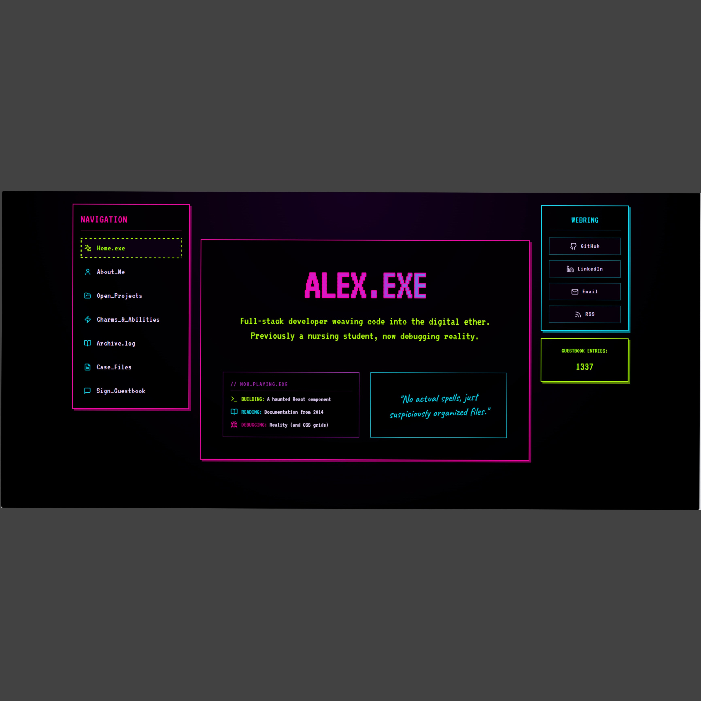

Y2K WebringRetro Tech & Arcade
Y2K Webring
A personal webring portfolio with retro window panels, visitor-counter spirit, and a community-web sense of discovery.
At a glance
About This Theme
A personal webring portfolio with retro window panels, visitor-counter spirit, and a community-web sense of discovery.
- Category
- Retro Tech & Arcade
- Format
- Standalone static website
- Hosting
- GitHub Pages
Design details
Theme Highlights
- Visual direction: A personal webring portfolio with retro window panels, visitor-counter spirit, and a community-web sense of discovery.
- Part of the Retro Tech & Arcade collection, presented alongside related design concepts.
- A dedicated preview page connects the visual overview with the published demo.
- The linked repository lets visitors examine the standalone project separately from this gallery.
View the project
Explore the Theme
Open the finished website or review the complete source files.